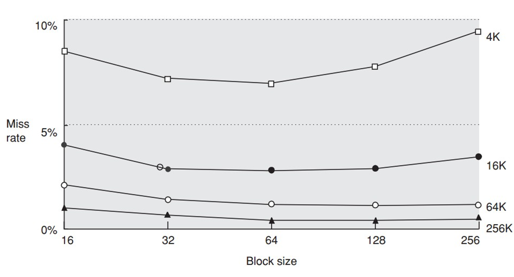
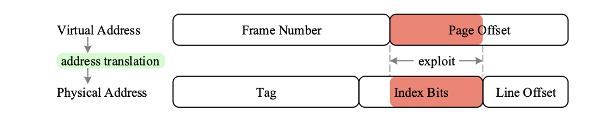

计算机体系结构2-2-2:缓存设计中的六个基本权衡
现在，我们已经掌握了设计一个“能工作”的缓存所需的所有知识。但是，一个“优秀”的缓存设计，则是在一系列相互冲突的目标之间进行精妙权衡的结果。今天，我们将系统性地探讨六个基本的缓存优化方向。这六个方向构成了所有高级优化技术的基础，它们就像是调节缓存性能的六个“旋钮”。每一次对旋钮的调节，都会带来收益，也必然会付出代价。理解这些权衡，是成为一名优秀架构师的关键一步。
我们将再次以这个核心公式为指导： $$ \text{AMAT} = (\text{Hit Time}) + (\text{Miss Rate} \times \text{Miss Penalty}) $$ 我们的目标就是，通过调节这六个“旋钮”，找到使AMAT最小化的最优组合。
第一部分：优化缺失率 (Miss Rate)——三个基本杠杆
降低缺失率是提升缓存性能最直观的途径。我们有三个基本的“杠杆”可以调节：块大小、缓存容量和相联度。
优化杠杆 #1：更大的缓存块 (Larger Block Size)
- 设计动机：利用空间局部性。当程序访问一个数据时，它很可能接下来会访问其相邻的数据。如果我们一次性取回一个更大的数据块（例如从32字节增加到64字节），那么由第一次访问（compulsory miss）带回来的数据，就能满足后续更多的请求，从而将多次缺失合并为一次。
- 收益：
- 降低强制性缺失 (Compulsory Misses)：对于具有良好空间局部性的程序，效果显著。
- 代价与权衡：
- 增加缺失代价 (Miss Penalty)：传输一个更大的数据块需要更长的时间。公式
Miss Penalty = Latency + Block Size / Bandwidth表明，缺失代价与块大小正相关。 - 可能增加冲突/容量缺失：在缓存总容量固定的情况下，更大的块意味着更少的块数量。这减少了缓存能够同时容纳的、来自不同内存区域的数据“样本”数量。如果程序交替访问多个地址，但这些地址之间的距离大于块大小，那么更大的块反而可能因为需要的块总数减少而增加冲突或容量缺失。 
- “U”形曲线的启示：这张图完美地诠释了权衡。一开始，增加块大小，得益于空间局部性，缺失率下降；但当块大小超过某个“甜点”后，由于块数量减少和缺失代价增加的负面效应开始显现，总的性能（以AMAT衡量）反而会下降。因此，块大小的选择是一个典型的优化问题，而不是“越大越好”。
- 增加缺失代价 (Miss Penalty)：传输一个更大的数据块需要更长的时间。公式
优化杠杆 #2：更大的缓存容量 (Bigger Caches)
- 设计动机：最简单粗暴的方法。更大的缓存可以容纳程序更多的工作集（working set），从而直接降低容量缺失 (Capacity Misses)。
- 收益：
- 降低容量缺失：当程序需要的数据总量超过缓存大小时，就会发生容量缺失。增加缓存容量是解决这个问题的唯一直接方法。
- 代价与权衡：
- 增加命中时间 (Hit Time)：我们在上一讲已经看到，更大的物理尺寸意味着更长的信号延迟和更复杂的解码逻辑，这会直接增加命中时间，甚至可能影响CPU的最高时钟频率。
- 增加成本和功耗：更多的SRAM单元意味着更高的芯片面积成本和静态/动态功耗。
- 设计哲学体现：这个权衡直接催生了多级缓存。我们用一个小的、快的L1缓存来保证低命中时间，用一个大的、稍慢的L2/L3缓存来保证低缺失率。
优化杠杆 #3：更高的相联度 (Higher Associativity)
- 设计动机：直接映射缓存因为其僵化的放置策略，容易产生冲突缺失。增加相联度（例如从1-way变为2-way或4-way），为一个内存块提供了更多的存放选择，从而有效降低冲突缺失 (Conflict Misses)。
- 收益：
- 降低冲突缺失：对于那些访问模式会导致地址映射冲突的程序，效果非常显著。
- 代价与权衡：
- 增加命中时间：如我们之前分析，更高的相联度需要更多的并行Tag比较器和更复杂的多路选择器，这会增加命中时间。
- 增加功耗：每次访问都需要读取和比较组内所有的Tag和Data，功耗随相联度增加而线性增加。
- 硬件复杂度增加。
- 经验法则：“2:1 Cache Rule of Thumb”
- 一个经验性的观察是：一个大小为N的直接映射缓存，其缺失率约等于一个大小为N/2的2路组相联缓存。
- 设计启示：这为架构师提供了一个重要的权衡依据。当面临“使用一个64KB的直接映射缓存”还是“一个32KB的2路组相联缓存”的选择时，如果它们的缺失率相近，那么后者可能因为更小的面积、更低的功耗和可能更短的命中时间而成为更优选。
第二部分：优化缺失代价 (Miss Penalty)
当缺失不可避免时，我们如何缩短CPU的等待时间？
优化杠杆 #4：多级缓存 (Multilevel Caches)
- 设计动机：我们刚刚在讨论缓存容量和相联度时，已经反复遇到了一个两难困境：我们既想要L1缓存足够快（因此要小），又想要它能捕捉足够多的数据以降低缺失率（因此要大）。
- 解决方案：不要二选一，我全都要！ 通过在L1缓存和主存之间增加一个或多个中间缓存层次（L2, L3, ...）。
- L1 Cache：设计目标是最低的命中时间。它小、快、相联度低，力求匹配CPU时钟周期。
- L2/L3 Cache：设计目标是最低的缺失率。它们更大、相联度更高，用于捕捉那些从L1“漏掉”的访问，避免昂贵的主存访问。
- 如何改变缺失代价？
- 对于L1缓存而言，它的缺失代价 (Miss Penalty) 不再是漫长的“主存访问时间”，而变成了更快的“L2命中时间”。只有当L2也发生缺失时，才需要承受访问主存的巨大惩罚。
- 多级缓存下的AMAT公式：
$$
\text{AMAT} = \text{Hit Time}{L1} + \text{Miss Rate}{L1} \times (\text{Hit Time}{L2} + \text{Miss Rate}{L2_local} \times \text{Miss Penalty}_{L2})
$$
- 注意：这里的
Miss Rate_L2_local指的是L2的局部缺失率（即L2的缺失次数 / 到达L2的总访问次数），而L2的全局缺失率（L2的缺失次数 / CPU发出的总访问次数）等于Miss Rate_L1 * Miss Rate_L2_local。
- 注意：这里的
- 包含与排除策略 (Inclusion vs. Exclusion)
- 包含 (Inclusion)：L2缓存是L1缓存的超集，即L1中的任何数据块在L2中都必须有一个副本。这是Intel处理器的典型策略。优点是简化了多核缓存一致性的实现。
- 排除 (Exclusion)：L1和L2中的内容是互斥的。优点是有效增大了总的缓存容量。
优化杠杆 #5：读缺失优先于写 (Giving Priority to Read Misses over Writes)
- 设计动机：写操作通过写缓冲（Write Buffer）可以被延迟执行，CPU通常不需要立即等待其完成。但读操作（Load）通常是关键路径，CPU需要立即拿到数据才能继续执行后续指令。如果一个读操作发生了缺失（Read Miss），而此时写缓冲正好在占用内存总线向主存写入数据，那么这个关键的读操作就必须等待。
- 解决方案：让读操作“插队”。
- 当发生读缺失时，缓存控制器不应简单地等待写缓冲清空。它应该检查写缓冲中是否有与当前读地址冲突的条目。
- 如果冲突（即写缓冲中有对同一地址的更新），则必须先处理写缓冲（或直接从写缓冲中获取数据），以保证数据一致性（避免RAW冒险）。
- 如果不冲突，并且内存总线空闲，就应该优先服务这个读缺失，让写缓冲的写入操作稍后进行。
- 收益：直接降低了读缺失的有效惩罚时间，因为减少了不必要的等待。这是一个低成本但高效的优化。
第三部分：优化命中时间 (Hit Time)
我们又回到了优化命中时间这个主题，但这次是从一个全新的角度。
优化杠杆 #6：在缓存索引中避免地址翻译 (Avoiding Address Translation during Indexing)
- 背景：CPU发出的是虚拟地址，而访问主存需要物理地址。这个从虚拟到物理的翻译过程由MMU完成，并且为了加速这个过程，我们使用了一个专门的缓存——TLB (Translation-Lookaside Buffer)，它缓存了最近使用过的地址翻译条目（页表项）。
- 设计困境：一个“朴素”的缓存设计流程是：
- CPU发出虚拟地址。
- 访问TLB，将虚拟地址翻译成物理地址。
- 用得到的物理地址去访问缓存。 这个过程是串行的，TLB访问和Cache访问的时间会叠加，大大增加了缓存的命中时间。
- 解决方案：并行化！ 我们能否在进行地址翻译的同时，就开始访问缓存？
- 关键洞察：虚拟地址和物理地址的低位部分——页内偏移 (Page Offset)——是完全相同的。
- VIPT (Virtually Indexed, Physically Tagged) Cache：
- 我们利用虚拟地址中的页内偏移部分来作为缓存的索引 (Index)。
- 与此同时，我们将虚拟地址的高位部分送入TLB进行翻译。
- 当缓存根据索引读出对应组的Tag和Data时，TLB也正好翻译出了物理地址的Tag部分。
- 最后，我们用物理Tag进行比较。 
- VIPT的设计约束：
- 为了保证这种并行操作的正确性，用于缓存索引的位数不能超过页内偏移的位数。
Cache Size <= Page Size * Associativity。- 为什么？ 否则，缓存索引就会包含一部分虚拟页号（VPN）的信息。不同的虚拟地址（例如来自不同进程的同一个虚拟地址
0x4000）可能会有相同的索引但不同的物理地址，这会导致歧义 (aliasing) 问题。 - 这个约束是现代L1缓存设计的核心原则之一。例如，如果页面大小是4KB，那么一个直接映射的VIPT L1缓存最大不能超过4KB。如果想设计一个更大的L1（如32KB），就必须增加相联度（如8-way），使得
Index_bits + Offset_bits <= Page_Offset_bits。